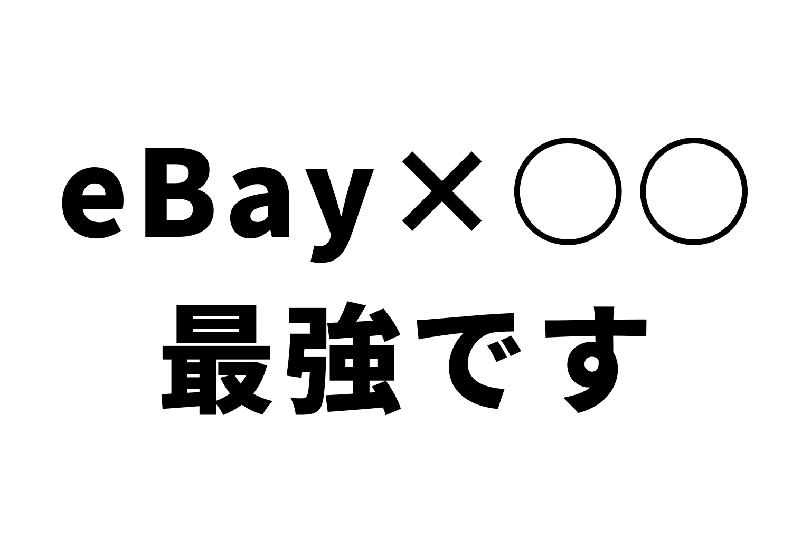
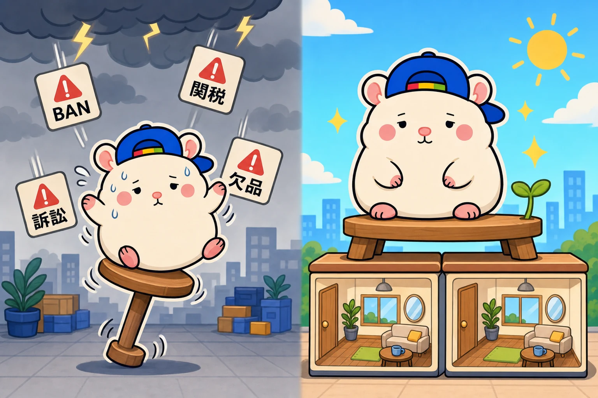
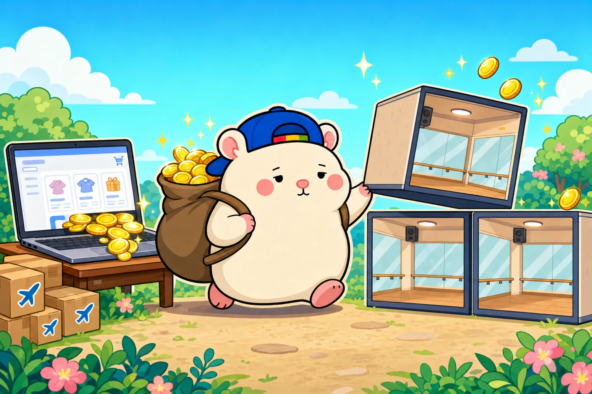

eBay一本で脱サラするのは、おすすめしません。
eBayは、ほぼ元手なしで始められて、短い期間で稼げるようになる商売です。
でも、eBay一本足打法は、リスクが大きい。
ぼくは、会社を辞めて独立したとき、
eBayとレンタルスペースの2つをやっていました。
この2つは、最強の組み合わせです。
リスクをおさえたまま、脱サラが現実になります🐹
eBayは、ほぼ元手なしで早く稼げる
この記事を読んでいる人は、たぶんeBayから入る人が多いと思います。
eBayは、ほぼ元手なしで始められます。
正確には、売上がeBayから振り込まれるまで、仕入れのお金を少し先に出します。
でも、在庫をかかえるための大きなお金はいりません。
しかも、いまはAIがすごく進歩しています。
うちの店も、梱包発送と仕入れ以外は、ぜんぶAIでやっています。
早い人なら、1年くらいで月の利益100万円。
2年で月200万円も、けっしてむずかしい数字ではないと思います。
ただ、そこまでいくと、自分ひとりではパンクします。
効率化、自動化、外注化。
人やAIにどんどん仕事を渡して、規模を広げていくことになります。
でも、eBay一本足打法はリスクが大きい

ここからが本題です。
eBayだけで食べていくと、こんなリスクをぜんぶかかえることになります。
- アカウントがBAN(停止)される
- 国際情勢が変わる
- 関税や原油がめちゃくちゃ高くなる
- 紛争や戦争が起きる
- 売っていた商品で、急に訴えられる
- 無在庫で、仕入れ元が欠品して送るものがなくなり、ディフェクト(店の評価の傷)がつく
どんなに注意していても、起きるものは起きます。
多かれ少なかれ。
訴えられる話も、大げさではありません。
ぼくは、帽子1個で米国の連邦裁判所から訴えられたことがあります。
アカウントを増やしても、逃げ道にならない
「じゃあ、アカウントを2つ3つ作っておけばいい」と思うかもしれません。
でも、アカウントは本人にひもづいています。
どれか1つがおかしくなったら、ぜんぶまとめてサスペンド(停止)になることもあります。
そうなると、支払いも止まります。
売上が残っていても、一定の期間、受け取れなくなります。
eBayは、あくまでプラットフォームの上でやる商売です。
eBayに何かあったら、自分の収入もなくなる。
これで会社を辞めるのは、ちょっとこわいです。
レンスペは「ほぼ何もしなくていい土台」になる
そこで、レンタルスペースです。
eBayと、抜群に相性がいいんです。
1部屋、2部屋くらいの運営なら、軌道に乗ってしまえば、やることは1部屋あたり1日0〜5分。
メインは、お客さんの問い合わせ対応です。
それも、毎日毎日連絡が来るわけではありません。
清掃は外注します。
外注は、eBayをやっている人ならお得意ですよね。
清掃を外注すれば、やることはほとんどなくなります。
eBayで稼いだお金で、レンスペを出す

順番はこうです。
- eBayで稼ぐ
- その利益を元手に、レンタルスペースを1部屋出す
- 部屋が、毎月の利益の土台になる
- いつもどおり、eBayを続ける
レンタルスペースは、1部屋出すのに平均で100万〜150万円くらい。
利益は1部屋で月10万円くらいなので、12か月前後で初期費用が戻ってきます。
1部屋で月10万円。
2部屋で月20万円。
こうやって、土台を1枚ずつ積んでいきます。
ぼくは、これまでに累計23店舗を出しました。
レンスペは、やることが少ない。
eBayも、どんどん自動化していく。
2つの事業とも、どんどん手が離れていきます。
レンスペ2部屋+eBay月30万円で、年収600万円
たとえば、レンタルスペースを2部屋出したとします。
利益は月20万円くらい。
eBayは、どんなに悪くても、1年くらいふつうにやっていれば、
月の利益30万円くらいはいくと思います。
- レンタルスペース2部屋: 月20万円
- eBay: 月30万円
- 合計: 月50万円
年収にすると、600万円くらいです。
ここまで来ると、脱サラや独立が、現実に見えてきますよね。
脱サラできたら、あとは同じことをくり返すだけです。
eBayで利益を増やして、レンスペを2部屋、3部屋、4部屋と増やす。
eBayの月の利益も、30万、40万、50万と増えていきます。
伸ばすのはeBay、支えるのはレンスペ
役割分担も、はっきりしています。
eBayは、がんばればがんばるほど利益が出る商売です。
レンタルスペースは、部屋と時間に限りがあります。
単価を上げるといっても限度があるので、売上には天井があります。
だから、レンスペは土台。
伸ばしていく部分は、eBayの力の入れ加減で決める。
攻めるのはeBay。支えるのはレンスペ。
両方持って、会社を辞める。
副業＋副業＝本業、です。
その先は、また別の事業を足していけばいい。
たとえば、そのノウハウを販売するのもありだと思います。
いまeBayだけをやっている人は、1つだけ考えてみてください。
eBayのアカウントが明日止まったら、来月の生活費はどこから出ますか?🐹
▶ eBayはやった分だけ伸びる。それが強みで、弱点でもある
▼中の人🏠(レンタルスペース23店舗・売上1.5億)のレンスペ実録
https://note.com/rentalspace_kiku
▼ブログ(eBay×レンスペ、全記事まとめ)
https://rental-space.net
▼この店のやり方は、ぜんぶ1冊にまとめてあります
リサーチ・出品・値付け・顧客対応まで、初月利益10万4,286円を出した実店舗の記録と手順を全部書いた教科書です。
読んだその日から、AI社員の作り方をそのまま真似できます。
『AI × eBay輸出の教科書 — 梱包以外、ぜんぶAI』
https://rental-space.net/kyokasho/ebay/
販売価格は3部売れるごとに2,000円ずつ値上がりします（上限あり）。内容・最新価格は販売ページをご確認ください。